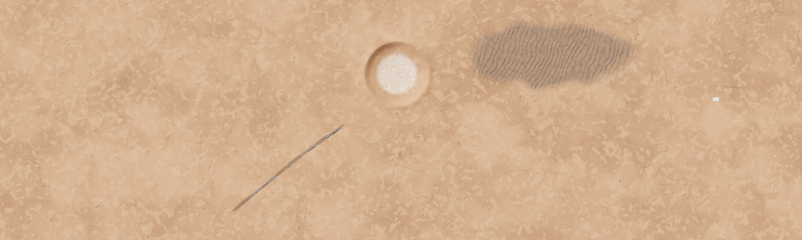
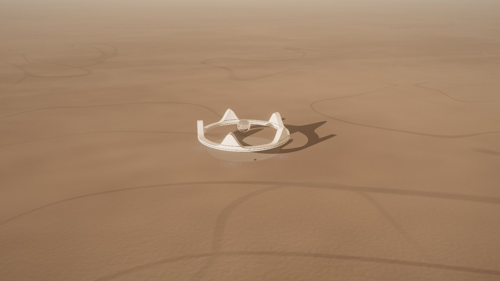

Site and city
The house stands on the smooth, icy plains of Arcadia Planitia in Mars' northern hemisphere, 30 km west of a spaceport built on one of the best-studied landing sites on the planet. This chapter goes from the whole planet down to the garden, then out again to the city that will grow around it.
Why hereFour reasons for Arcadia Planitia
1 · Ice. Radar from orbit and the craters that punch into it show thick water ice just below the dust, over hundreds of kilometres. Ice is water to drink, oxygen to breathe and, with carbon dioxide from the air, methane fuel for ships and pods. Digging the Pentagon alone yields about 1.5 million tonnes of ice.
2 · Low ground. At 3.9 km below the average height of Mars there is more air above you: 870 Pa, 40% more than average. That helps ships brake before landing and adds a little shielding.
3 · Flat and smooth. Few boulders, gentle slopes and firm ground make landings safe and building simple. Studies of Starship landing sites rated this spot, AP-1, the safest in Arcadia.
4 · Mid-latitude. At 40° N there is good daylight for the Crown's rooms most of the year, it is warmer than near the poles, and still cold enough for the ice to last.
Arcadia Spaceport stands on candidate landing site AP-1 (39.8° N, 202.1° E, −3.9 km), studied for SpaceX Starship by NASA and university scientists (Golombek and others, 2021). A second site, AP-9, 58 km further east, showed the thickest ice seen by radar and is kept for a later ice mine.
The regionArcadia Planitia and its neighbours
A smooth plain as large as western Europe, between the Phlegra Montes to the west, Amazonis Planitia to the south and the giant volcanoes of Tharsis to the south-east.
The corridor30 km from the house to the spaceport

Everything that links the house and the spaceport runs along this strip:
- The pod route, a 37 km scenic loop flown in 4 min 40 s over the Dune Sea, a 3.2 km crater and the Ice Cliffs, then through a dust storm into the sunset.
- The rover road, 30 km of rolled and heat-fused soil for the pressurised bus and the cargo rovers when pods can't fly.
- The power and data cable, buried beside the road: 30 MW of direct current and optical fibre (chapter 05).
- The maglev tunnel for cargo and passengers, 68 m down and dead straight, in phase 2 (chapter 06).
The dunes, the crater and the cliffs on this map are the landscape designed for the demo and its flight video. The real ground at AP-1 is flatter and plainer. The Mars Atlas shows the real planet, with this designed strip laid over it when you zoom in close.
From the top of a spire, 90 m up, the horizon is 25 km away, so on a clear evening Jim can see the ships standing at the spaceport. Standing on the plain, the horizon is only 3.4 km away.
The site planThe house and its ground
The ground under the house is built, not left raw. A paved pentagon of sintered-regolith slabs, 4 m wider all round than the Pentagon below, shows from the air exactly where the house lies under the ground. A kerb of dark basalt edges it, with a thin line of light that glows warm at dusk. Inside it the Stone Garden is a circle of raked gravel 224 m across with seven dark basalt stones: no mirrors and no panels, so the ground stays as clean as a stone garden in Kyoto.
At the centre stands the Orb's dock, a ring of dark basalt 31 m across and 5.5 m high with a bronze band and five bronze pads on top, round the Sun Well, the glass sky lens 20 m across over the Pentagon's atrium, 68 m below. The Orb comes down onto the pads for service, or if its drive ever stops. A hatch in its base then opens onto the dock, and a stair and a lift inside the ring go down into the atrium.
Under each spire lies a pad of dark basalt 14 m across with a bronze rim, where the Crown would settle if its drives ever stopped. While the drives run, rings of pale light pulse slowly on it where the anti-gravity field reaches the ground.
The Pentagon lies under the paving with its five corners exactly below the five spires, and the ground hints at it. Five strips of dark glass, lit warm from below at dusk, trace its five avenues from the dock out to the corners. Where each avenue ends, a low corner pavilion of glass under a thin white roof holds a stair and an airlock down to the corner core. The other ways in are the Sun Well and the rover tunnel from level L5, which climbs at 12% and comes out 700 m east, where the road to the spaceport begins. The pods fly straight into the hangar in the east spire, so they never touch the ground here.
A field of radiators 400 m north gets rid of the spare heat from the reactors (chapter 05).
| The Crown's ring | Ø 244–276 m, 40 m up |
| The Orb, over the Sun Well | Ø 48 m, 48–96 m up |
| Paved pentagon over the Pentagon | 166 m sides |
| Stone Garden | Ø 224 m |
| Basalt stones | 7, 2 to 4 m |
| The Orb's dock | Ø 30.8 m, 5.5 m high |
| Sun Well lens | Ø 20.4 m |
| Pads under the spires | 5, Ø 14 m |
| Corner pavilions | 5, glass 6.2 × 8.2 m |
| Glass over the avenues | 5 strips, 96 m long |
| The Pentagon, below | 160 m sides, 5 levels |
| Graded ground round the house | Ø 840 m |
| Radiator field | 150 × 60 m, 400 m north |

The cityArcadia City grows like a sunflower
Every new home takes the next seed of a sunflower spiral, turned 137.5° (the golden angle) from the one before and a little further out. The spiral never needs replanning: it grows outward and the homes stay evenly spaced, about 450 m apart.
The civic buildings take the Fibonacci seeds: 21 the school, 34 the hospital, 55 the market hall, 89 the university, 144 the concert hall, 233 the stadium. Those seeds happen to line up, so the civic buildings form one avenue running due north from the Crown.
Each home is a small crown over a small pentagon. Tunnels, the city's roots, join each home to its nearest older neighbour, so water, power and cargo flow back to the Pentagon along a tree that grows with the city. People move between homes by portal.
| Phase | What | Size |
|---|---|---|
| 1 | Spaceport, the house, the corridor | 1 home |
| 2 | First neighbours, the maglev | 13 homes · 1.0 km |
| 3 | Arcadia City and its civic avenue | 233 homes · 3.8 km · ~2,000 people |
| 4 | Links to other cities by rail, tunnel and portal | — |
Living with MarsWhat the planet does, and what the design does about it
| Mars at a glance | |
|---|---|
| Radius | 3,390 km · 53% of Earth's |
| Gravity | 3.71 m/s² · 38% of Earth's |
| Day, a sol | 24 h 39 min 35 s |
| Year | 687 Earth days · 668.6 sols |
| Tilt of the axis | 25.2°, so seasons like Earth's |
| Air at the average height | 0.6 kPa · 95% CO₂ |
| Sunlight | 43% of Earth's on average |
| Radio delay to Earth | 3 to 22 min one way |
| Moons | Phobos · Deimos |
| From the house | |
|---|---|
| Arcadia Spaceport | 30 km east |
| AP-9 ice field | 88 km east |
| Phlegra Montes | 1,700 km west |
| Olympus Mons | 1,780 km south-east |
| Phoenix lander, 68° N | 1,990 km north-east |
| Gale crater: Curiosity and the TTMath campus | 4,360 km |
| Jezero crater: Perseverance | 6,030 km |
| Once round Mars | 21,340 km |
| Mars | At the site | The design's answer |
|---|---|---|
| Thin air | 870 Pa, less than 1% of Earth's, mostly carbon dioxide | Every room is pressurised; suits outside; the pod flies on rocket thrust because wings and rotors can't lift much in such thin air. |
| Cold | −20 °C on a summer afternoon, −90 °C at night, below −120 °C in winter | Thick insulated shells; spare heat from the reactors warms the rooms; the ground below stays near −60 °C all year, steadier than the air. |
| Radiation | About 230 mSv a year on the open surface, 70 times Earth's | 16 m of soil over the Pentagon stops it; the Crown's shell cuts it to a third; people sleep below ground. See chapter 08. |
| Dust and storms | Dust devils every afternoon in summer; a planet-wide storm about every 5½ Earth years that dims the sun for weeks | Storm shutters, sealed suit ports, and reactors that keep the power on when the sun is gone. |
| Low gravity | 38% of Earth's | A 50 m pool, a gym and walking everywhere: no lifts, a moving walkway only in the Crown. |
| Toxic soil | Perchlorate salts in the dust | Suits stay outside at the suit ports; farm soil is washed; the air is filtered. |
| Long seasons | A year of 668 sols; spring and summer in the north last about 370 sols | A Mars clock and calendar in every room (chapter 09); two years of food and spares in store. |
| Marsquakes | Small and mostly far away; InSight recorded more than 1,300 | Structures designed for them; the floating Crown doesn't feel them at all. |